Suppose we have to go to the hospital for a test in 4 days at 9:10am.
Since it is a very important appointment, it is a good idea to have a reminder the day before.
Then, you can create a second reminder on the same day to let you know when you have to leave the house. To avoid being late, you have decided that you need to leave the house 1 hour and 45 minutes early.
Finally, we will create a third reminder for the actual hospital appointment. This will allow us to see how long time we have for the appointment at any time.
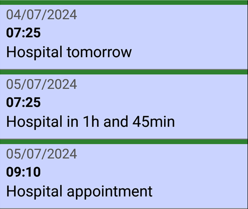
You can grab a pen and paper and do some calculations, or you can use the SECURElogBook and create everything with a few taps on the screen.
SECURElogBook has windows to add or subtract time with no errors, so scheduling tasks is very easy. Also, it has a button to create copies of records.
1. Open SECURElogBook and go to the main window, with blue background:
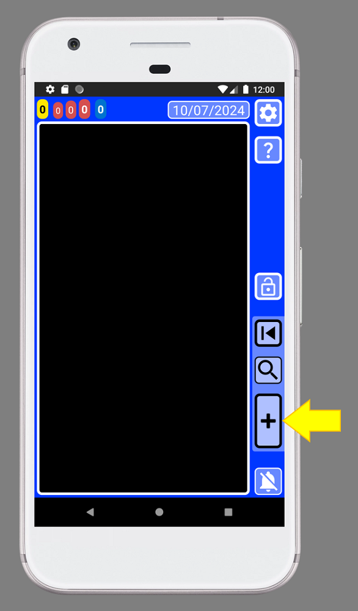
2. Create a new record by pressing the button indicated with the yellow arrow (image above).
3. Once the creator window is open (green background) we can edit the record:
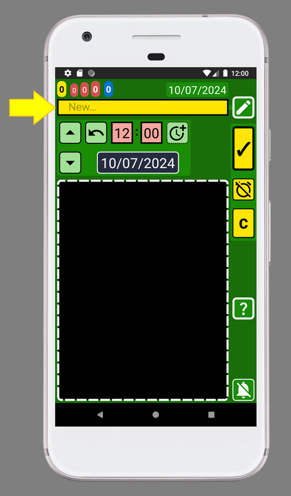
4. Call this record “Hospital appointment” by adding the text inside the text box indicated with the yellow arrow (image above):

5. Now we need to set the date and time for 4 days from now. Add 4 days to the current date, since today is 01/07/2024, the date will be 05/07/2024 at 9:10am:
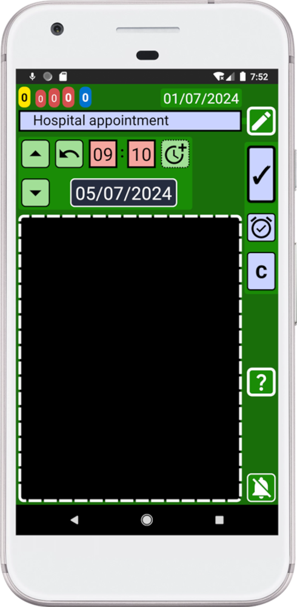
6. Press the “C” button to create a copy of this record:
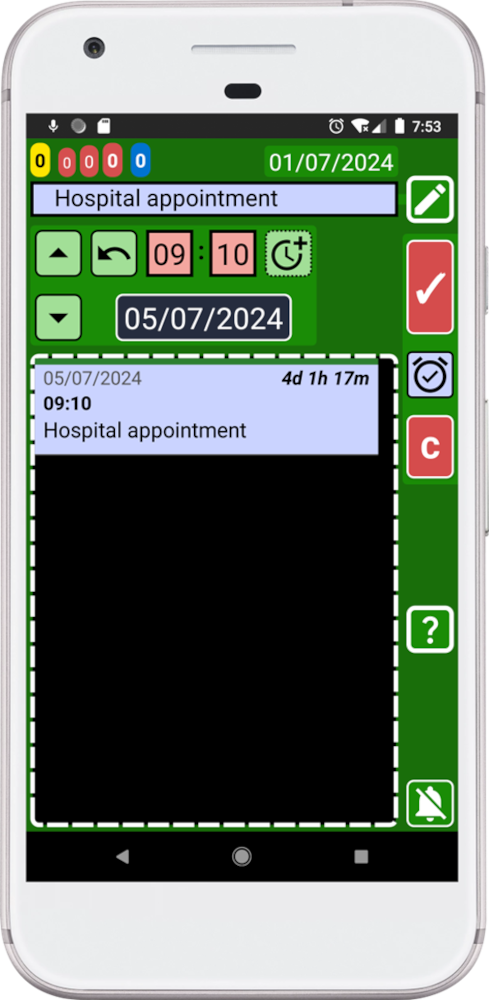
7. Change the text to create the next record. Replace the text for “Hospital in 1h and 45min”.
8. In order to create another copy, we need to change the time. Remember that we want to leave 1h and 45min before the hospital appointment. To change the time, you can do the math mentally or you can use the dedicated window to calculate the time by holding down this button
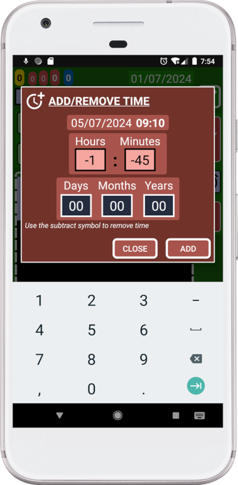
9. Press the “ADD” button.
10. Press the “C” button to create a copy of this record:
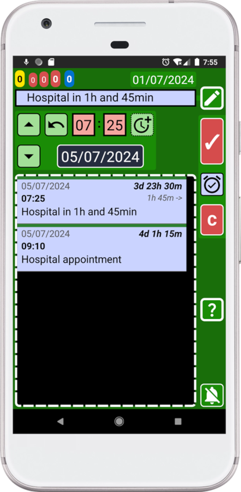
11. Change the text to create the next record. Replace the text for “Hospital tomorrow”.
12. Select the day before pressing the blue date button to open the calendar:
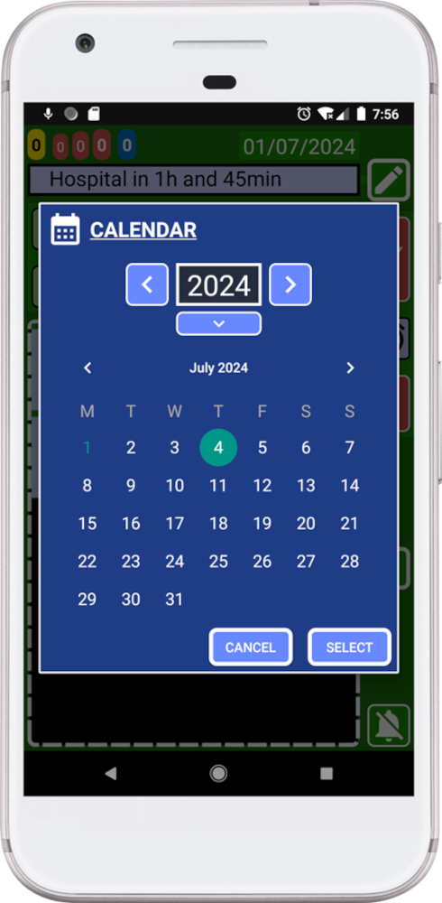
13. Press “SELECT” button.
14. Press the “C” button to create a copy of this record:
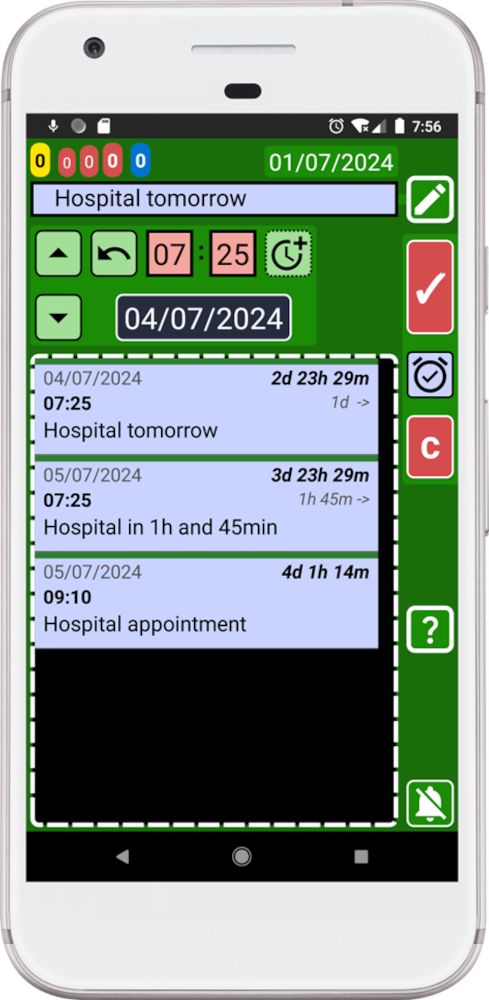
15. Press the back button on your device to go back to the main window (blue):
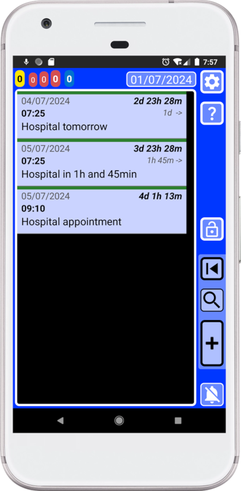
Congratulations, SECURElogBook advanced user! You have just created several records quickly. You are now in full control of the situation!
Thanks to the copy button we can create multiple records in a few seconds:
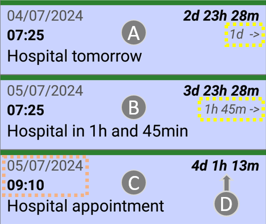
In a few seconds and without mental calculations that could be wrong, we created all we need to have total control. We have created a record a day before (A). A record to let us know when we need to leave the house (B). We decided that we need to leave the house 1h and 45min before to be safe, and you can see it that it is right. Finally, we have a record with the actual hospital appointment, our goal. The time indicated by (D) will change every minute, so at any time you will know how much time you have left for your appointment:
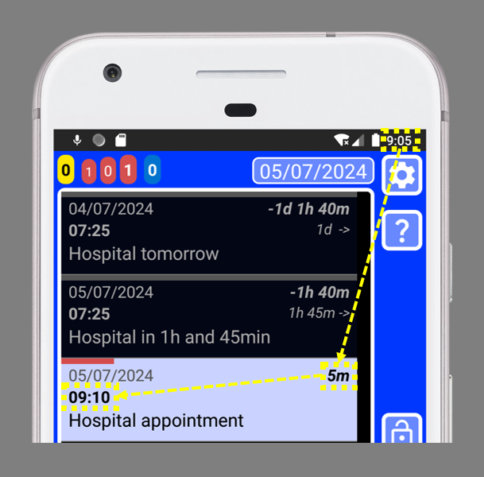
You are now an advanced SECURElogBook user! You can now create multiple records quickly to keep a complete control of the situation.
With SECURElogBook, information goes in and worries go out! üòâ